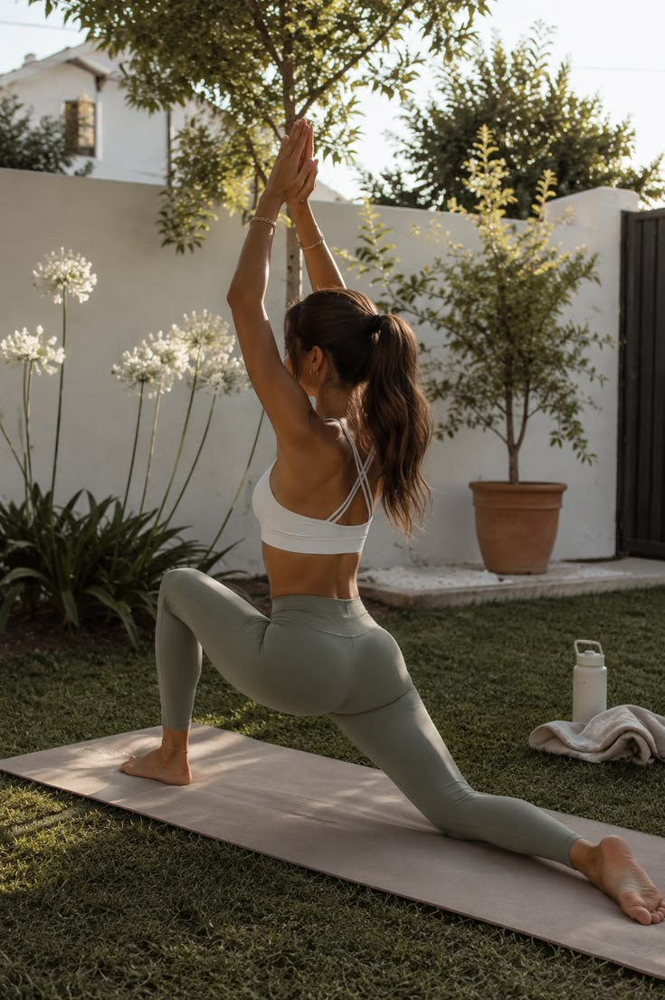
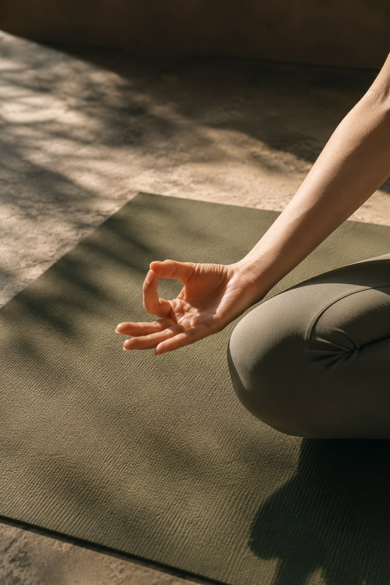

Our Mission
To empower individuals on their wellness journey by providing accessible, high-quality yoga instruction in an inclusive, supportive environment that nurtures holistic health.
OUR STORY
At Zenith Wellness, we believe that true well-being comes from the harmonious balance of mind, body, and spirit. Our journey is dedicated to providing a serene space where you can explore your practice without judgment.


OUR STORY
Zenith Wellness was born out of a desire to create a sanctuary away from the noise of everyday life. What started as a small gathering of passionate practitioners has blossomed into a community dedicated to mindful living.
We recognized a need for a space that values genuine connection and personal growth over aesthetic perfection. Our studio was designed to reflect this ethos, using natural materials and abundant light to foster a sense of peace from the moment you step inside.
To empower individuals on their wellness journey by providing accessible, high-quality yoga instruction in an inclusive, supportive environment that nurtures holistic health.
We view yoga as a practical tool for daily life, not just physical exercise. We emphasize breath, alignment, and mindful presence to help you cultivate resilience both on and off the mat.
Encouraging continuous self-discovery and honoring each individual's unique path.
Cultivating present-moment awareness in practice and daily interactions.
Fostering a nurturing environment where kindness to self and others is paramount.
Valuing regular practice over perfection to build sustainable, long-term well-being.
Founder & Instructor
Vinyasa Flow, Restorative Yoga, and Mindfulness Meditation. Sarah blends dynamic movement with deep restorative practices to create a balanced approach to wellness.
With over 12 years of teaching experience across various disciplines, Sarah has guided thousands of students through their yoga journeys, from beginners to advanced practitioners.
E-RYT 500 certified, having completed rigorous training programs in India and the US. She continually updates her knowledge in anatomy and trauma-informed yoga.
“Yoga is not a performance; it's an inquiry. I aim to guide students to look inward, listening to their bodies' unique language and honoring their present state.”
More About Sarah →First studio doors opened in a small downtown loft.
Expanded to our current flagship location.
Launched comprehensive online digital platform.
Vision: Opening our first dedicated retreat center.